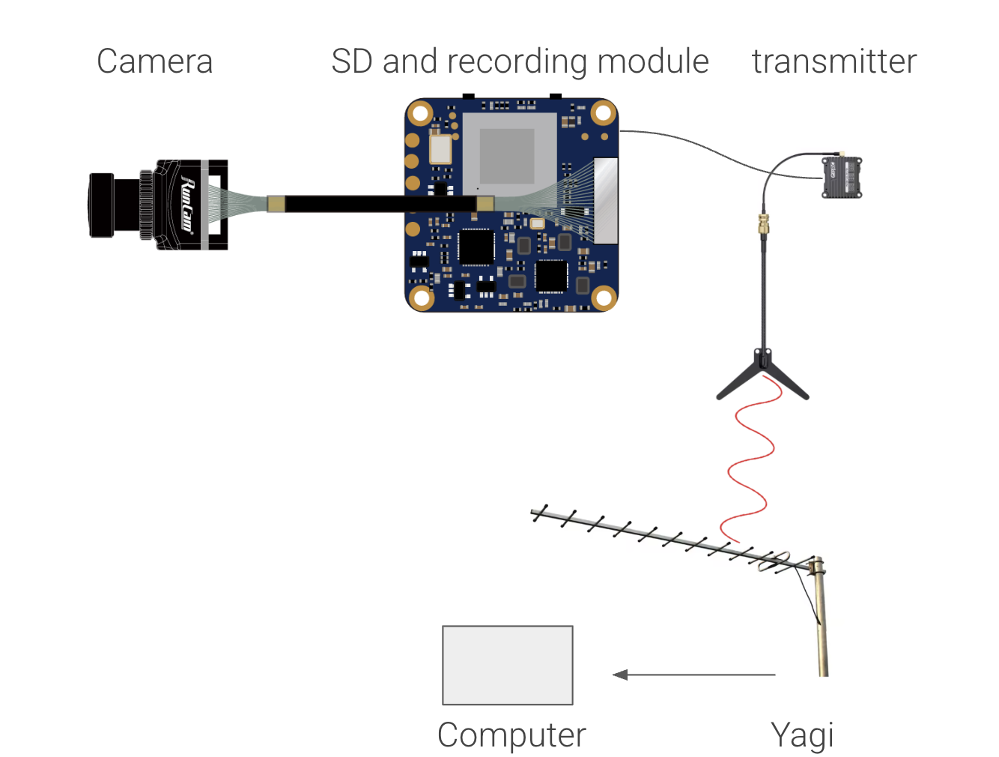
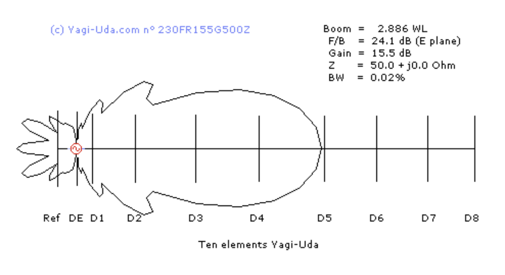
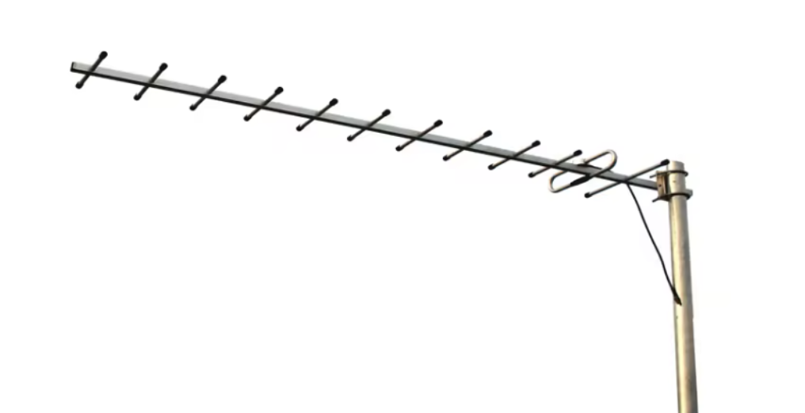
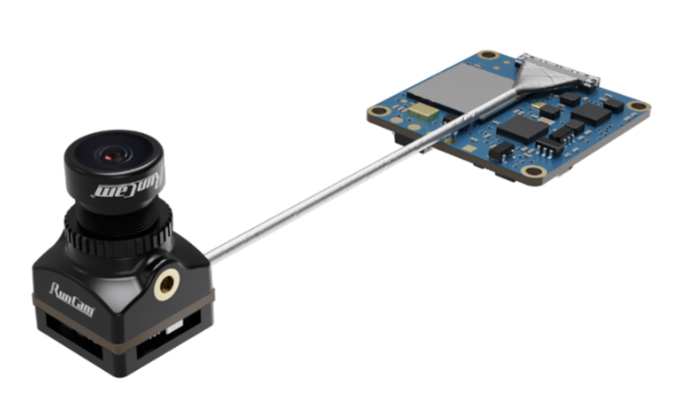
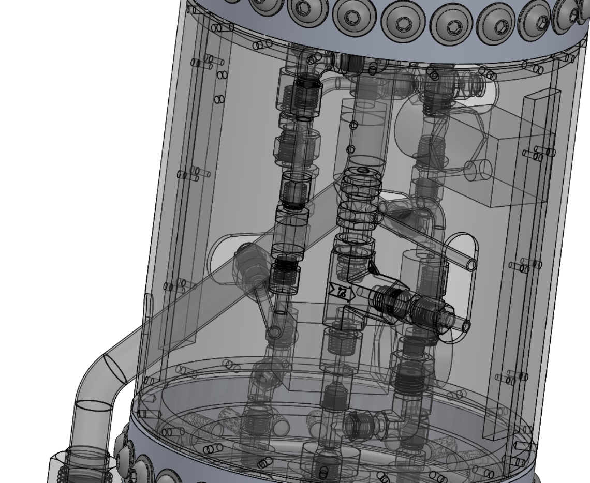
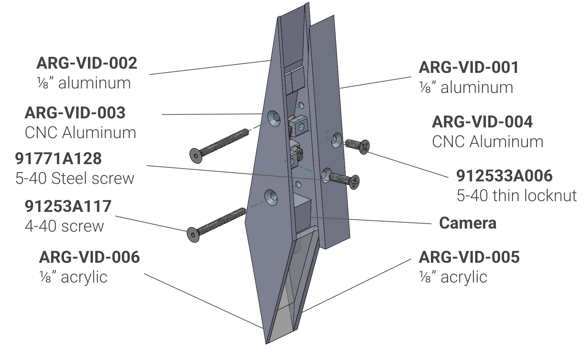

AVIONICS / RF COMMUNICATIONS / IN PROGRESS
Argo Video System
Low-Power Wireless Video Transmission for High-Altitude Rocketry
RF Research & Hardware Evaluation
BU Rocket Propulsion Group
In Development
01 / OVERVIEW
Project Overview
The Argo Video System is being developed as part of Boston University's Rocket Propulsion Group to enable live wireless video transmission from a high-altitude rocket to a ground receiving station. The project combines RF communication, antenna selection, embedded camera hardware, and power management within the constraints of a rocket's avionics system.

02 / DESIGN REQUIREMENTS
Defining the System Requirements
The video system must operate within strict electrical and physical constraints while supporting communication over a substantial distance. These requirements guide the selection of camera hardware, video transmitters, antennas, and power distribution components.
100,000 ft
Target Flight Altitude
< 2W
Camera + Transmitter Power Budget
Live Video
Transmission Objective
RF
Wireless Communication
These specifications are design targets and have not yet been validated through full-range flight testing.
03 / RF COMMUNICATION
Researching RF Transmission
A major challenge in the project is selecting a suitable radio-frequency communication system. My research has included evaluating potential operating frequencies around 915 MHz and 1.2 GHz, along with their implications for antenna compatibility, bandwidth, power consumption, and transmission range. The transmitter and receiving antenna must operate within compatible frequency ranges to achieve reliable communication.

04 / ANTENNA SELECTION
Evaluating Directional Antennas
Directional antennas are being considered for the ground receiving station to improve reception over long distances. My research includes evaluating Yagi antenna characteristics such as operating frequency, gain, polarization, and radiation patterns. Antenna selection is particularly important because the rocket's position and orientation will change throughout flight.

05 / CAMERA HARDWARE
Integrating the Onboard Camera
The onboard camera must provide a video output compatible with the selected transmission system while remaining within the available power budget. I have been investigating the camera's electrical requirements, including its supply voltage, current consumption, and video output interface. Bench testing will help verify camera functionality before integration with the RF transmitter.

06 / SYSTEM INTEGRATION
Integration Within the Avionics Bay
The camera and associated electronics must fit within the rocket's avionics bay while maintaining appropriate mechanical support, electrical connections, and camera positioning. The mechanical design also affects antenna placement and the overall integration of the video system.


These mechanical models illustrate the wider team's integration work and provide context for the electrical system design.
07 / TESTING & VALIDATION
Preparing for Hardware Testing
The next stage of development involves evaluating the camera, transmitter, and antenna hardware. Planned testing includes verifying camera operation, measuring electrical power consumption, checking transmitter and receiver compatibility, and evaluating wireless video transmission. Full-range transmission performance has not yet been demonstrated.
08 / MY CONTRIBUTIONS
My Role in the Project
My contributions have focused on researching RF transmission options, comparing antenna characteristics, investigating camera power requirements, and preparing for hardware testing. Working on this project has strengthened my understanding of RF communications, power budgeting, and the practical challenges of integrating electronics into high-altitude rocket systems.